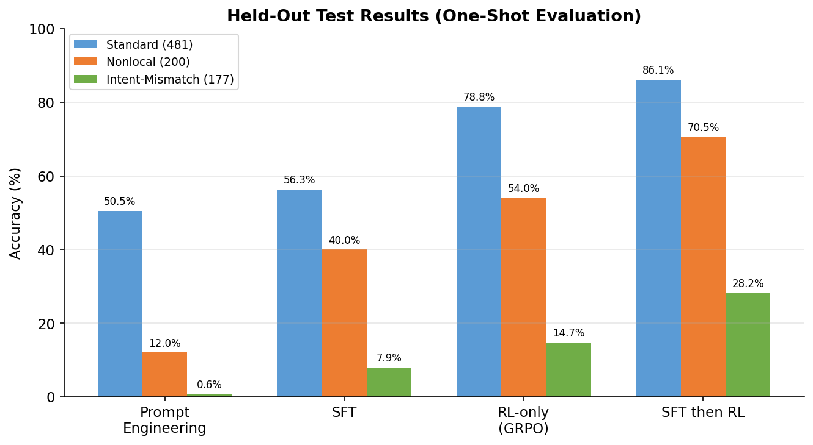
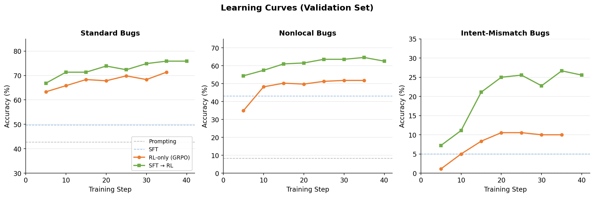
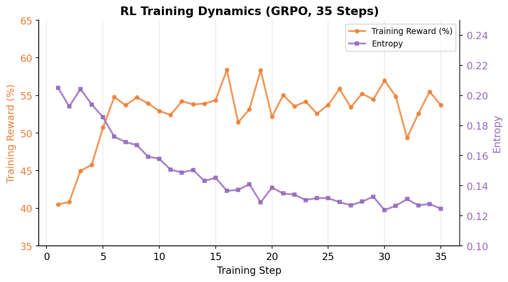

March 2026
Comparing prompting, supervised fine-tuning, and reinforcement learning in a novel DSL debugging environment
Frontier model agents do well in unfamiliar environments: give them access to the right tools and docs, and they can iterate toward solving complex problems, even in out-of-distribution domains.
Small, open-source models are trained toward this behavior as well, but generalization scales with model size, and an out-of-the-box 7B model can struggle with problems it hasn't seen during training.
I wanted to explore adapting a small open-source model to an unseen coding environment, where the model has the ability to explore and run code while solving problems. Since there are many paths to the right solution, I chose reinforcement learning, specifically Group Relative Policy Optimization (GRPO) as part of the training regimen.
Most GRPO work focuses on single-turn RL, solving math problems or one-shot code generation. Here I wanted to reinforce agentic behaviors, where the model can choose to plan and iterate across multiple tool calls, learning what types of behavior lead to success.
To do this, I built a custom domain-specific language (DSL) and interpreter for the model to debug. The DSL is a pipe-based dataflow language for querying tabular data, designed to be simple enough for a 7B model to learn but complex enough to require real debugging. The RL environment shows the model a bug in DSL code that it has never seen during training, and the model can choose to write and run code, inspect table schemas, read function documentation, and submit the final answer.
I trained Qwen 2.5 7B on two A100 GPUs using the verl framework, comparing prompting, SFT, GRPO, and SFT → RL on three categories of bugs: standard bugs (single mutations like a wrong column name), nonlocal bugs (where the root cause is upstream of where the error appears), and intent-mismatch bugs (where the code has multiple errors and doesn't match what the programmer intended). The best approach (SFT → RL) moved accuracy from 50.5% to 86.1% on standard bugs, 12.0% to 70.5% on nonlocal bugs, and 0.6% to 28.2% on intent-mismatch bugs. This post covers the environment, training setup, and results. The environment and benchmarks are open-source, and trained checkpoints are on Hugging Face.

Here's an example of a problem the model learned to solve. The buggy code joins two tables and aggregates, but produces an empty table. Comparing the code with the expected output reveals four bugs: the join matches on the wrong key, the aggregation uses max instead of min, the sort is ascending instead of descending, and it returns 5 rows instead of 3.
document_sections = load("document_sections")
summary = document_sections
|> group_by(document_code)
|> aggregate(max_section_sequence: max(section_sequence), count: count())
documents = load("documents")
enriched = join(summary, documents, on: document_code == document_structure_code)
result = enriched
|> sort_by(count, asc)
|> take(5)
emit resultExpected output: 3 rows with min_section_sequence (not max), sorted descending, joined on document_code (not document_structure_code).
✗ Wrong. Diagnosed the issue but couldn't fix it.
✓ Correct. Fixed all four bugs at once.
The base model correctly identifies the join key mismatch but can't determine the correct fix, and submits the unchanged code. The trained model uses the expected output, infers what the program was supposed to do, and fixes all four bugs in a single step.
Interestingly, the SFT-only model (trained on GPT-5-mini expert trajectories) takes a more methodical approach: it inspects both tables, correctly identifies the join key fix, but then gets stuck trying invalid DSL syntax for three consecutive turns and never recovers. The RL stage trades that caution for directness. The binary reward signal reinforces whatever leads to correct submissions fastest, and inspection doesn't get additional reward to keep it around.
Here's a harder problem where the trained model has to iterate. The bug: a join matches asset_id == part_id instead of part_id == part_id, producing wrong rows.
asset_parts = load("asset_parts")
|> select(part_id, asset_id)
parts = load("parts")
enriched = join(asset_parts, parts, on: asset_id == part_id)
result = enriched
|> sort_by(asset_id, desc)
|> take(5)
emit result✗ Wrong. Misdiagnosed the problem as duplicates, tried a nonexistent DSL operation.
✓ Correct. Took 6 attempts, used errors as information.
The base model inspects all the data but misdiagnoses the problem as duplicate rows and tries a DSL operation that doesn't exist. The trained model doesn't inspect at all. Instead it runs modified code repeatedly, using each failure to narrow down the fix. When turn 5 produces an error saying asset_id isn't in the parts table, it realizes the join key should be part_id == part_id, not asset_id == part_id.
All training, evaluation, and inference are available and reproducible in a Docker container, along with a script that finds the cheapest training machine on Vast, loads the container onto it, and allows for easy SSH access:
# Host machine
bash scripts/vast.sh create # cheapest 2xA100 (~$2.50/hr)
bash scripts/vast.sh ssh
# Inside container
dsl-debug setup sft
dsl-debug train sft-rl
dsl-debug sglang /workspace/models/my_model
dsl-debug eval --split standard
dsl-debug eval --split nonlocal
dsl-debug eval --split intent_mismatchThe DSL is a pipe-based language with SQL-like semantics for data exploration (filter, select, group_by, join, etc.). Programs query truncated, real-world databases from the Spider SQL benchmark. Part of the dataset consists of programmatically-generated correct programs which were stochastically degraded. The rest of the programs were written and degraded using GPT-5-mini via the OpenAI API.
The interpreter runs through a regex-based parser, a topological sort of the dependency graph, and an execution engine that simulates the data sources in-memory.
The environment provides four tools:
run(code): Execute a DSL program and return its output (or error)inspect(table): Show the first few rows of an intermediate tableread_docs(topic): Look up DSL function documentationsubmit(code): Submit a fix. Returns correct/incorrect. Terminates the episode.Each RL episode shows the model some buggy DSL code and the expected output. The model gets 8 turns to investigate and solve the bug, with the goal of passing the working DSL code to the submit tool.
If the model's code returns the same rows as the correct implementation, the environment assigns a reward of 1, and assigns a reward of 0 in all other cases. I experimented a bit with partial credit (e.g., fraction of rows matching) but ultimately stuck with binary rewards for this iteration of the project.
The bugs fall into three categories:
| Category | What's Wrong | Example |
|---|---|---|
| Standard | Single mutation (wrong column, operator, value) | filter(name == "MURASS") should be "MURASSO" |
| Nonlocal | Bug in upstream stage affects downstream output | Wrong group_by column 3 lines before the error appears |
| Intent-mismatch | Program logic doesn't match stated intent (2–3 errors) | Code computes sum but expected output shows average |
Standard bugs can usually be solved just by diffing the buggy output against the expected output; larger models tend to spot these issues instantly, but smaller models need to explore to get to the solution. Nonlocal bugs are harder because part of the solution requires tracing backwards through the pipeline to find where things actually went wrong. Intent-mismatch bugs are the hardest: the code doesn't do the right thing, but it's not obvious what the programmer meant, so the model has to figure out the intent from context.
The DSL operates over rows sampled from databases from the Spider SQL benchmark. Training data for RL consists of 6,420 blended problems (standard + nonlocal + intent-mismatch), skewed toward medium and hard examples to provide more learning signal on difficult problems. For SFT, I generated 1,593 expert trajectories by placing GPT-5-mini in the same training environment and recording its exploration (95.5% solve rate). Only successful trajectories were kept.
No database schemas are shared between train, validation, and test sets (or between SFT and RL), to reduce the chance of overfitting and memorization.
I tested five system prompts on base Qwen2.5-7B-Instruct. The best was a concise expert persona ("You are an expert DSL debugger..."), which included some hints about common bug pitfalls. The best prompt achieved 50.5% on standard bugs in the held-out test set. CoT and verbose prompts hurt performance on this specific setup. It's possible that the model got confused by the overly detailed instructions. I didn't spend much effort here because testing prompt engineering wasn't my focus for this project.
Intent-mismatch accuracy was 0.6% across all prompts.
The model was fine-tuned on 1,593 expert trajectories: full parameter updates, LR=5×10−6, 2 epochs. Validation performance started to flatten around step 100 (of 198).
1.5k trajectories is modest and probably the biggest limitation of this work. A continuation of this project would likely see better performance with 10x more trajectories, but my initial thinking was simulating an environment where these trajectories were created by a small amount of human experts. This was a somewhat arbitrary "design choice": you could easily craft a scenario where 10k trajectories come from mining user behavior in a proprietary system. Despite this lower amount of trajectories, SFT → RL did show that RL can build effectively on even a modest SFT warmup.
The basic idea of on-policy RL: put the model in an environment, let it try things, reinforce what works, repeat. The main difference between algorithms is how they figure out the baseline, the calculation that says "did this attempt go better or worse than expected?" GRPO generates a batch of outcomes, and says "the ones in the group that did better than the group average should be more likely, and the ones that did worse should be less likely."
In our case: for each debugging problem, the model makes 8 attempts. Some solve the bug, some don't. The update pushes the model toward what the successful attempts did differently from the failures. If all 8 succeed or all 8 fail, there's no contrast within the group, so that batch contributes nothing to learning. This is one of the major downsides of GRPO with binary rewards and long, multi-turn rollouts: sometimes the model is burning GPU time generating thousands of tokens and the entire batch is just thrown away.
With reward shaping, partial credit will create variance in the reward signal that pushes gradients, even if all final answers are wrong. Though a common pitfall here is that without careful tuning, the model may learn that getting partial credit is the winning strategy and start to optimize for that at the expense of getting complete correct answers. I chose to stick with binary rewards to remove training variance so I could focus on other aspects of the training.
Here's the full GRPO objective from the DeepSeek-Math paper, followed by a simplified version below:
$$J_{\text{GRPO}}(\theta) = \mathbb{E}\Bigg[ \frac{1}{G} \sum_{i=1}^{G} \frac{1}{|o_i|} \sum_{t=1}^{|o_i|} \min\!\Bigg( \frac{\pi_\theta(o_{i,t} \mid q, o_{i,\lt t})}{\pi_{\theta_{old}}(o_{i,t} \mid q, o_{i,\lt t})} \hat{A}_{i,t} ,\; \text{clip}\Big(\frac{\pi_\theta(o_{i,t} \mid q, o_{i,\lt t})}{\pi_{\theta_{old}}(o_{i,t} \mid q, o_{i,\lt t})},\, 1\!-\!\varepsilon,\, 1\!+\!\varepsilon\Big) \hat{A}_{i,t} \Bigg) - \beta\, D_{KL}\!\big(\pi_\theta \,\|\, \pi_{ref}\big) \Bigg]$$
Where:
We can simplify this equation to make it easier to understand. I dropped the KL penalty ($\beta = 0$) for this project. Pulling out the clip/min (which just cap how far the policy can move in one step) for clarity, the core of what GRPO computes is:
$$J(\theta) = \mathbb{E}\Bigg[ \frac{1}{G} \sum_{i=1}^{G} \frac{1}{|o_i|} \sum_{t=1}^{|o_i|} \underbrace{\color{#5B9BD5}{\frac{\pi_\theta(o_{i,t} \mid q, o_{i,\lt t})}{\pi_{\theta_{old}}(o_{i,t} \mid q, o_{i,\lt t})}}}_{\color{#5B9BD5}{\text{probability ratio}}} \;\cdot\; \underbrace{\color{#ED7D31}{\hat{A}_{i,t}}}_{\color{#ED7D31}{\text{advantage}}} \Bigg]$$
Two pieces multiplied together, averaged over tokens and rollouts. The probability ratio is the gradient signal: it measures how much more (or less) likely each token is under the current policy versus the policy that generated the rollout. The advantage is what makes it group-relative: it says whether this rollout did better or worse than the others in its group.
The advantage is computed by normalizing rewards within each group:
$$\color{#ED7D31}{\hat{A}_i = \frac{r_i - \text{mean}(\mathbf{r})}{\text{std}(\mathbf{r})}}$$
With binary rewards (1 for correct, 0 for wrong), if 3 out of 8 rollouts solve the bug, the successes get advantage $+0.625$ and failures get $-0.375$. The update pushes the model toward what the successful rollouts did differently. If all 8 succeed or all 8 fail, $\text{std}(\mathbf{r}) = 0$ and the group contributes no gradient. There's nothing to compare.
I wanted to use the resampling approach from DAPO/DR-GRPO to handle zero-variance groups, but the PR for it in verl was stale. I chose to just reject groups without variance, and because roughly 50% of the rollouts were either all-correct or all-wrong, accumulating batches of 512 led to an effective batch size closer to my target of 256.
Note that verl starts with a default batch size of 16, which is very small compared to GRPO literature. A single bad step can easily lead to degenerate outputs that even high KL divergence penalty can't fix.
Dropping KL removes the loss signal that is continually nudging the model back towards its base behaviors. For this experiment, I dropped it early on to minimize moving parts in the training, accepting that the base model may drift. The risk/reward calculation is that by allowing the model to drift farther from the base, it may be able to learn behaviors that would be held back by sticking too close to the base model. The risk is not just degeneration of base model abilities, but actual wasted training time if the model takes a step that starts degenerative outputs. With on-policy training, knocking the model away from good behavior will end a training run pretty fast.
In this setup, the benchmarks show that alignment tax was minimal and the model's capabilities didn't change much.
Key training hyperparameters: LR=1×10−5 with cosine schedule, 40 training steps, batch size of 512 prompts with 8 rollouts each, no KL divergence penalty.
RL-only results:
RL performed reasonably well without priming the model via SFT. Qwen 2.5 7B has good agentic and multi-turn capabilities, it just needed a bit of fine-tuning to adapt to this specific new environment.
GRPO starting from the SFT step 100 checkpoint instead of the base model. All hyperparameters identical to RL-only for fair comparison.
SFT then RL beats RL-only on everything.
These are one-shot evaluations on a held-out test set that was never used for model selection.
| Method | Standard (481) | Nonlocal (200) | Intent-Mis (177) |
|---|---|---|---|
| Prompt Engineering | 50.5% | 12.0% | 0.6% |
| SFT | 56.3% | 40.0% | 7.9% |
| RL-only (GRPO) | 78.8% | 54.0% | 14.7% |
| SFT then RL | 86.1% | 70.5% | 28.2% |
The best model still misses ~14% of standard bugs and 72% of intent-mismatch bugs. Looking at the difficulty breakdown, easy bugs are mostly solved (93%+), but hard standard bugs are around 52%. The failures tend to involve complex joins or cases where multiple columns have plausible alternative values, making it hard to narrow down the mutation from output alone.
Intent-mismatch is a different story. At 28%, the model has clearly learned something about reasoning over programmer intent, but it still fails on most of these. Many intent-mismatch bugs require noticing that the code computes a related-but-wrong quantity (sum instead of average, count instead of distinct count), which requires understanding the semantics of the expected output rather than just pattern-matching against it.

SFT → RL starts higher (SFT provides a better initialization) and climbs faster on all three metrics. On nonlocal bugs, RL-only plateaus around 52% while SFT then RL reaches 65%. On intent-mismatch, RL-only never exceeds 11% while SFT then RL reaches 27%. Both methods plateau around step 30-35. Further training would likely require fresh data or curriculum changes.
Note that these are validation set numbers used for model selection. The final test results in the table above were evaluated once on a held-out test set after model selection was complete.
| Benchmark | Base | SFT | RL-only | SFT then RL |
|---|---|---|---|---|
| MMLU (5-shot) | 74.6% | 74.6% | 74.7% | 74.5% |
| GSM8K (8-shot) | 84.9% | 83.9% | 84.4% | 84.1% |
| HumanEval (0-shot) | 65.9% | 62.2% | 59.1% | 62.2% |
MMLU and GSM8K show negligible degradation. HumanEval is most sensitive: RL-only loses 6.8pp, while SFT and SFT then RL lose 3.7pp. Training didn't use a KL divergence penalty or data mixing, so these numbers represent the worst case.

If you're used to supervised learning, the training curves for GRPO may look counterintuitive. PG loss goes up, but for GRPO we don't care about absolute loss, just that the gradients push the model toward better behavior. Training reward looks flat too, because the group filtering throws out all-positive and all-negative batches before the optimizer step. As the model learns, the all-positive groups grow and all-negatives shrink, but neither shows up in the reported reward. The validation accuracy curves above are the real signal.
Entropy declines gradually from 0.21 to 0.12 without collapsing, which is what you want to see. I initially set the entropy coefficient to 0.01, which caused entropy to explode to 4.0 within a few steps. The issue: at 0.01, the entropy bonus term in the loss dominates the policy gradient signal early in training. The model gets more reward from maximizing entropy (outputting near-uniform token distributions) than from actually solving problems. Dropping to 0.001 was enough to prevent premature collapse without overwhelming the reward signal.
All training ran on a single multi-GPU Vast.ai instance (2×A100-SXM4-80GB, ~$2/hr).
Distributed training. The stack is verl 0.7 + sglang 0.5.6 on PyTorch 2.9. During GRPO, sglang generates rollouts in server mode with tensor parallelism across both GPUs. verl handles training with FSDP2 (full-shard data parallelism), CPU parameter offload, and optimizer offload. This combination fits 7B training in 160GB of total VRAM.
Monkey-patches to verl. I'm a big fan of verl and it handles quite a lot of grungy infra training chores, but I did make some small patches. The main one was DAPO-inspired zero-variance group filtering in the advantage computation.
Decoupled evaluation. I chose to run training and validation separately rather than inline. Verl's validation was slow due to the long multi-turn rollouts and the validation settings didn't saturate the GPUs because it was keeping training weights in memory. It was significantly faster to train for a few steps and then evaluate with sglang's highly-optimized inference engine.
RL results can be notoriously hard to reproduce. They're sensitive to hyperparameters, infrastructure versions, and subtle environment details. To make this as reproducible as possible, the entire training stack is packaged as a single Docker image with the environment, training configs, evaluation harness, and all dependencies baked in. You can go from a fresh GPU pod to a running training job in a few commands.
# Full training reproduction on a 2xA100 pod
git clone https://github.com/AndrewLngdn/dsl-debug.git
cd dsl-debug
bash scripts/vast.sh create # rent a 2xA100 (~$2.50/hr)
bash scripts/vast.sh ssh
dsl-debug setup sft && dsl-debug train sft # SFT warmup (~1.5 hrs)
dsl-debug train sft-rl --model /workspace/checkpoints/global_step_100 # GRPO (~12 hrs)The core environment package has zero external dependencies (just Python stdlib) and can also be used standalone:
pip install -e .
python examples/quickstart.py # run a single debugging episode
# Evaluate any OpenAI-compatible model on the benchmark
pip install -e ".[eval]"
python examples/evaluate_openai.py \
--model your-model \
--base-url http://localhost:8000/v1 \
--split standardThe repo includes 858 held-out test problems across three difficulty levels, a FastAPI server for language-agnostic access, and pre-trained checkpoints on Hugging Face.
If you have questions or want to chat, reach out at andrewlngdn@gmail.com. The environment and benchmarks are on GitHub, and trained checkpoints are on Hugging Face.